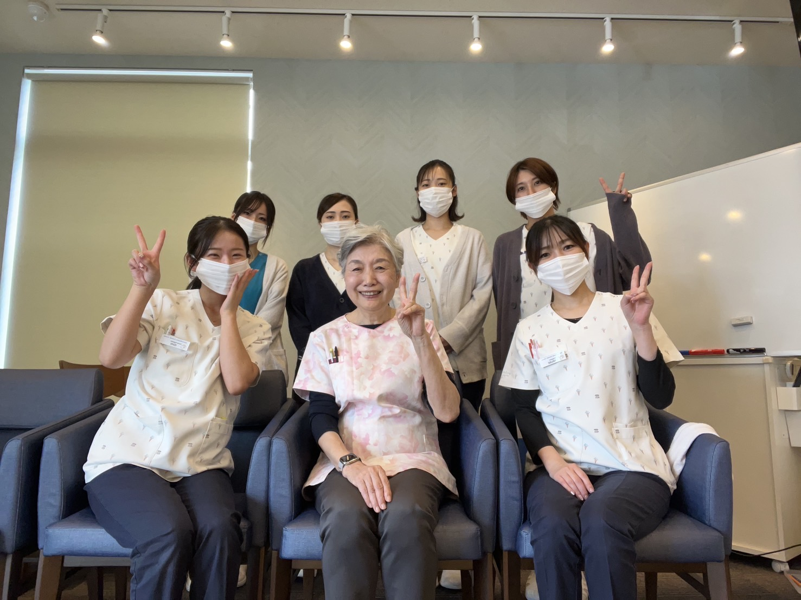
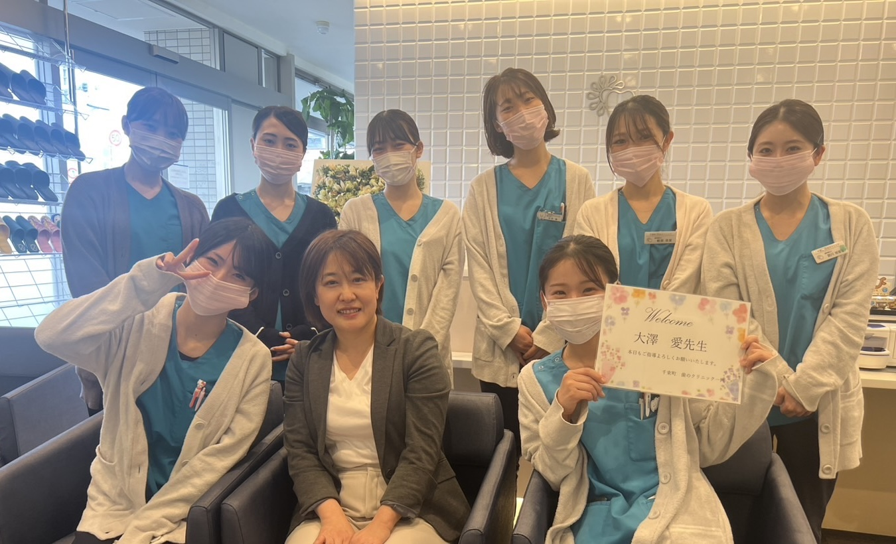
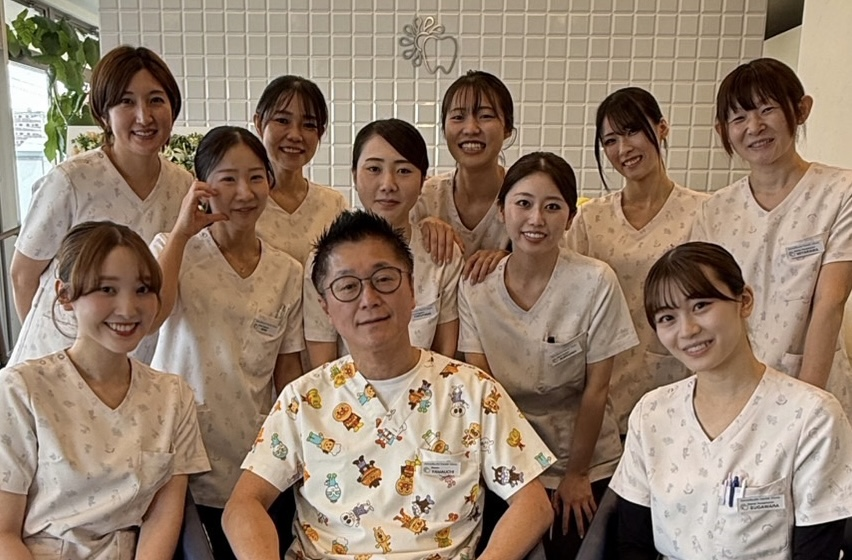

理念
『関わる全ての方を幸せに』
- 患者様を笑顔にし、健康を守る
- 学んだ技術や知識を患者様へ還元する
- 互いに学び合い、輝ける歯科医療人へ✨
魅力① 人間関係
- 院長が優しい
- 怖い先輩・上司はいません
- 仲良く、協力し合うチーム
魅力② 環境
- 自動精算機あり
- リライト診察券
- 院内システム一元管理
魅力③ 制服
- ジェラートピケ、ロンハーマンなどおしゃれなユニフォーム
- カーディガン／ヒートテックも支給
魅力④ 新人研修
歯科医師
- 経験の浅い方は、院長が懇切丁寧に指導（インプラント症例多数・患者様のご負担が少ない低侵襲の治療に定評あり）
- 学びを深めたい方はセミナー・勉強会あり
- 矯正治療成約率85%の歯科医師が指導
- 筑波大学口腔外科所属の歯科医師も在籍（専門的な治療も学べます）
歯科衛生士
- 安心の研修システム（マニュアルに沿って学べる）
- 先輩がマンツーマンで丁寧に指導
- メディア実績ある外部講師から最前線の知見を習得
- 安心の研修システム（マニュアルに沿って学べる）
- 先輩がマンツーマンで丁寧に指導
- メディア実績ある外部講師から最前線の知見を習得
上間 京子 先生（Jokanスクール 主任DH）

大澤 愛 先生（日本歯周病学会 認定DH）

受付秘書
- わかりやすいマニュアルをご用意しています
- 経験豊富な先輩スタッフがマンツーマンで、基礎から丁寧に教えます
- 人柄と前向きさを重視しており、新卒スタッフも多数活躍中です
クリーンスタッフ
- 手順に沿って進められる清掃マニュアルがあります
- 優しい先輩スタッフが一つひとつの業務を丁寧に教えます
- 未経験・第2キャリアのスタッフも多数在籍しており、みんな生き生きと働いています
魅力⑤ 患者層
- 小児からご高齢まで幅広い患者様
- 一般歯科、予防歯科、小児歯科、審美歯科、インプラント、矯正歯科、口腔外科など幅広い診療
魅力⑥ 福利厚生
- 奨学金制度あり
- 退職金制度あり（歯科衛生士・受付秘書）
- 一般歯科治療無料（同居の家族無料）
- ホワイトニング・矯正・歯磨剤や歯ブラシなどの社員割あり
- 出産育児制度あり（時短勤務可）
- 仕事もプライベートも楽しく充実
- 医院で会員制ホテルを契約。ホテルや美味しいレストランで優雅な体験を✨
魅力⑦ 仕事内容
歯科医師
歯科衛生士
- 衛生士業務（メンテ・歯周治療・ホワイトニング）
- アシスタント
- 希望者は矯正歯科治療
受付秘書
- 受付・会計
- アポイント予約管理
- 販売品管理
- 院内広報
- 事務作業
クリーンスタッフ
⏱ 一日のタイムスケジュール
〈平日〉
- 09:00〜
- 診療準備
- 09:30〜
- 午前診療開始
- 14:00〜
- 昼休憩
- 15:30〜
- 午後診療開始
- 18:30
- 診療終了・片付け・終礼
〈土日祝〉
- 08:30〜
- 診療準備
- 09:00〜
- 午前診療開始
- 14:00〜
- 昼休憩
- 15:00〜
- 午後診療開始
- 17:00
- 診療終了・片付け・終礼
新卒衛生士の年間スケジュール（目安）
- 4〜6月：医院の流れを把握、アシスタント中心
- 7〜9月：小児P処デビュー、基本検査・スケーリング練習
- 10〜1月：大人のスケーリングデビュー
- 2〜4月：SRP練習
給与
歯科医師
歯科衛生士
受付秘書
受付秘書
※内容は変更になる可能性があります。
※経験・実績による

見学・お問い合わせ
まずは見学だけでも大歓迎！
ちょっと覗く気持ちでOK。
雰囲気を体感してください😊
パート・学生・アルバイトも歓迎！
ご不明な点や気になることがございましたら、どうぞお気軽にお電話やメールにてお問い合わせください！